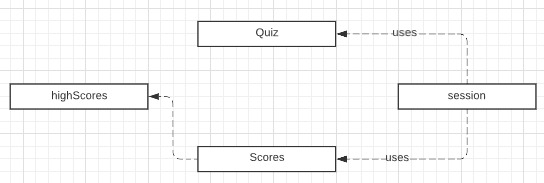
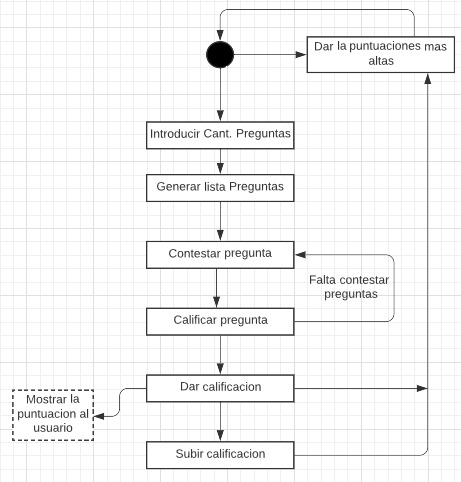
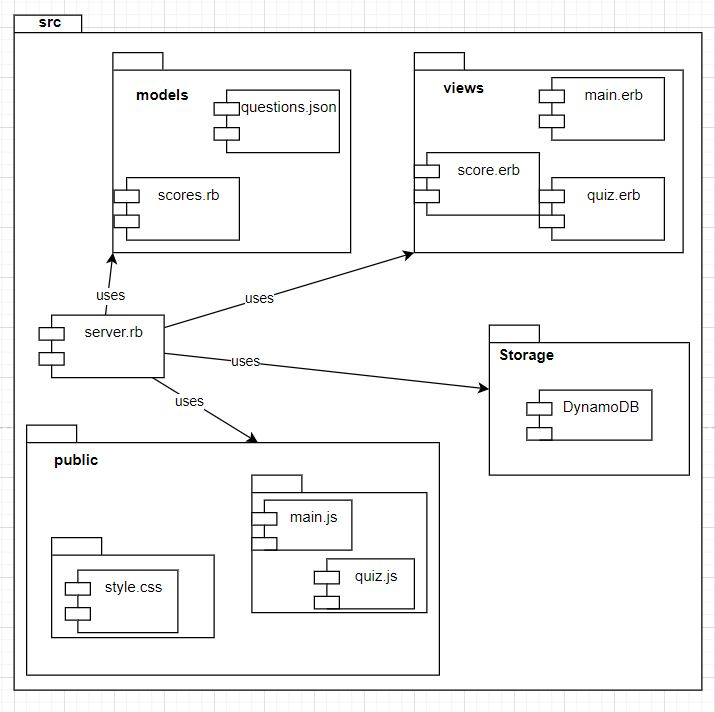
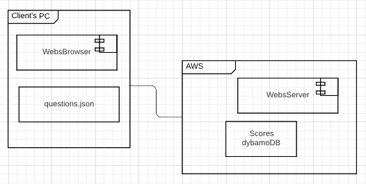
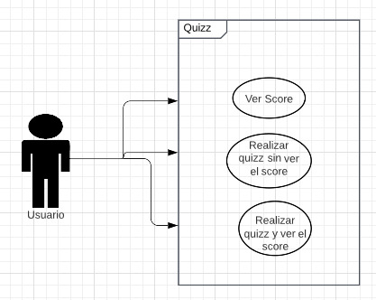

Application Design and Architecture¶ ↑
| Author |
Fernando Silva |
| Co-Author |
Jose Luis Mata |
| Date |
11 Nov, 2022 |
Aqui se descrube la documentación de la aplicación de un quiz el cual usa microservicios con las herramientas de lambda, sinatra y dynamodb, Si no se ha hecho previeamnete, se deben de instalar las siguientes gemas:
$ gem install hanna-nouveau $ gem install sinatra $ gem install faraday $ gem install aws-sdk-dynamodb
La estructura del proyecto es la siguiente:
arielQuiz/
├─ doc/ Folder del RDoc.
├─ img/ Folder de las imagenes para documentar.
└─ src/ Folder con el codigo per se.
├─ public/ Folder con codigo utilizado por el cliente.
│ └─ css/ Folder con el estilo de la pagina.
│ └─ js/ Folder con los scrpts y el archivo de las preguntas,
├─ models/ Folder con los modelos.
└─ views/ Folder con las vistas de la aplicacion
El archivo builddocs.sh tiene el script requerido para hacer la documentación necesaria. Corre el script desde el directorio arielQuiz escribiendo en la terminal:
$ bash builddocs.sh
La raíz de la documentaci+on debería estar en: arielQuiz/doc/index.html
Se puede usar cualquier browser para ver el resultado.
Instalar y correr la aplicación.¶ ↑
En esta seccion se explica como correr e instalar la aplicación.
Necesitas tener Ruby 2.6 minimo y tener las gems instaladas que se mencionaron anteriormente. Una vez que se tienene estos requisitos, se puede usar el siguiente comando en el directorios /src
$ ruby -I . -w server.rb
Despues de esto, en la terminal se mostrará cual es el URL donde se esta corriendo la aplicación.
4+1 Modelo Arquitectorial View¶ ↑
Logical View¶ ↑
La sesión puede estar en dos lugares, uno es ir a los scores, y otro es entrar a al quiz. El quiz carga las pregunntas correspondientes dependiendo de cuantas preguntas se busquen, mietras que scores descarga las puntuaciones que estan guardadas en DynnamoDB

Process View¶ ↑
Ofrecemos inicar con dos opciones, ya sea que agregue el número de preguntas que quiere agregar y luego inicie el quiz o revise directamente los puntajes. Si revisa los scores podra verlos y regresar al menu principal, si decide iniciar el quuiz procedera a podder contestar las preguntas una por una hasta que complete las preguntas seleccionadas. Una vez hecho esto, podrá ingresar su nombre y subir su puntuación. Esto lo llevará a la página de scores para ver en que lugar quedó.

Development View¶ ↑
Nuestro proyecto se compone de 4 partes:
-models: se utilizan para cargar datos -views: son las pantallas -public: aqui se guarda logica del fronend y el estilo de la página -storage: se guarda principalmente los puntajes

Physical View¶ ↑
En cuanto al tema físico es relativamente simple. Tenemos el cliente en el cual se guardan las preguntas y se tiene las vistas del proyecto, luego el servidor que esta en AWS, en este se hace a conexión con la base de datos donde estan los scores.

Scenarios¶ ↑
Considedranos 4 escenarios posibles:
-Que simplemente se meta a ver los puntajes -Que Haga el quiz y suba su puntaje -Que haga el quiz y no suba su puntaje -Que empieze el quiz pero no lo acabe

Patterns Used¶ ↑
Para este proyecto se usaron principalmente 2 patrones.
-
Domain-Specific Language: El archivo
server.rbcontiene una serie de rutas de Sinatra. Sinatra es un DSL diseñado en crear aplicaciones en ruby. -
Model-View-Controller: La aplicacion procura usar un sistema mvc, en donde se tiene un modelo que obtiene los datos, un controllador que los pone donde debe y una vista donde se pueden ver.
Acknowledgments¶ ↑
Agradezcco a GoSnippets que es donde se consiguó el template, a Sebastián Morales por ayuda técnica y apoyo moral y tanto a Leo Castillejos como Oscar Zúñga por ayudarme con el proyecto.
References¶ ↑
Mention here any consulted books or web resources. Examples:
-
Lara, O. Z. (s/f). TaxEvation at main · OscarZunigaLara/sinatraQuiz
-
Tutorial Point. (2020). Html tutorial (Tutorial Point, Ed.). Independently Published.
-
Pure JS & CSS card multiple choice questions quiz layout. (s/f). GoSnippets Bootstrap Snippets; GoSnippets. Recuperado el 28 de noviembre de 2022, de gosnippets.com/snippets/pure-js-css-card-multiple-choice-questions-quiz-layout